Programming, robotics, traveling
Автономный робот на базе TurtleBot с self driving, slam, ros, распознанием знаков
Всем привет, с целью передачи опыта, а также для того, чтобы структурировать и закрепить весь тот объем информации, который пришлось перелопатить, я пишу эту статью. Я не ставлю перед собой целью изложить мануал по созданию нашего решения (тк исходный код и так полностью открыт). Подразумеваю, что основной интерес в том, чтобы изложить основые принципы построения подобных систем, изложить используемые источники, рассказать о том от чего мы отказались, и к чему мы пришли. Постараюсь сохранить баланс между количеством информацией и читаемостью.
Если вы не знаете что такое ROS советую к изучению ресурс Voltbto.com, вот например статья по работе с сервисами в ROS.
В конце марта 2020 года компания Starline во второй раз в своей истории провела хакатон.
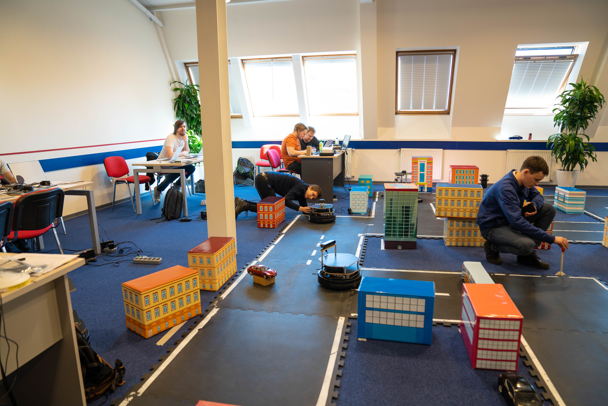
По сравнению с предыдущим хакатоном (youtube), проведённым в октябре 2018 года, в этот раз сильно повысился уровень организации: был чёткий регламент, система оценки, равные условия для всех участников и сложное квалификационное задание - такое, каким и должно быть.
Организаторы в этот раз взяли высокую планку по сложности соревнований: настолько, что из 25 поданных заявок квалификацию прошли только 5. Для решения квалификационного задания было необходимо настроить роботу в симуляторе gazebo для проезда из одной точки в другую. Подробнее об этом здесь.
Такой уровень не может не радовать: наконец в России появилось ещё одно хорошее соревнование по робототехнике для специалистов, а не для школьников. Кстати по этой теме, отнести к таким соревнованиям в России на данный момент я могу лишь несколько (мой личный рейтинг):
- Starline Hackathon
- COEX Hackathon (проведение на 2020 год под вопросом)
- Робофест Autonet 18+
- UpGreat Зимний город + очень крутая статья на vc.ru
- Робокросс тык-1, тык-2
- Робофинист РТК Экстремал Pro (информация есть здесь)
- Крок Конкурс летающих роботов [больше не проводит]
Все эти соревнования отличаются друг от друга достаточно сильно, но в них мне как специалисту было [бы] интересно участвовать.
Теперь расскажу немного про сам хакатон. Хотя по факту он уже таким не являлся, за исключением, возможно, жеребьевки участников без команды. В нём присутствовали все атрибуты соревнования: есть отборочные, заранее известное и чётко прописанное задание (а соответственно и подготовка).
Я @urpylka с моим другом Артуром @goldarte решили участвовать вдвоём (в предыдущий раз я занял третье место, а он – первое).
Дано
Каждой команде был выделен робот Turtlebot E2 следующего содержания:
- Платформа Kobuki
- RGBD-камера Orbbec Astra
- Rplidar A2
- Компьютер Intel NUC [BOXNUC7I7BNH]
- Дополнительная камера Logitech HD Pro C920
По условиям соревнования, для равенства всех участников, разрешалось только менять компоновку из представленных выше компонентов и использовать произвольное ПО. Ставить более мощный компьютер или дополнительные сенсоры, принесённые на площадку, запрещалось.
Изначально соревование должно было проходить 4 дня в неспешной обстановке, но в конце второго дня мы узнали о том, что организаторам пришлось сократить один день ввиду короновирусной обстановки в городе.
Организаторами изначально был построен целый город (7x7 клеток): из квадратных черных матов было сделано дорожное полотно с разметкой, а из коробок разного размера с прикрепленными иллюстрациями были оформленны дома. У каждого дома на полу малярной лентой была отмечена его позиция, чтобы если кто-то сместил дом, знал куда его вернуть на место. Это важно для возможности ориентации робота с помощью построенной карты.
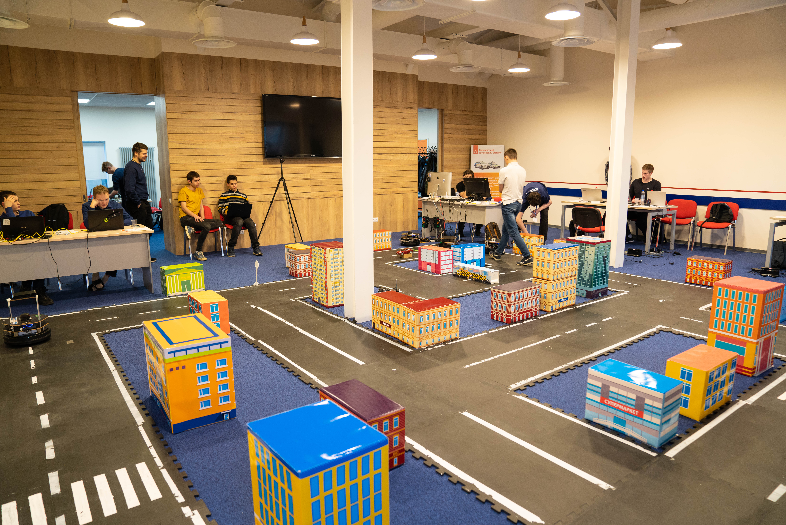
В городе имелись препятствия (про расположение которых мы не знали заранее):
- Светофоры
- Знаки “Стоп”
- Блоки “Дорожные работы”
- Другие участники движения в виде статичных моделей машин
Также была сплошная разметка, где было запрещено движение по встречной полосе и пересечение самой полосы.
Задание и решение
По заданию нужно было проехать из точки старта в неё же (при этом вернуться в точку старта нужно с другой стороны) с учетом всех препятствий и сделать это как можно больше раз за отведенное время. При этом нарушения накладывают временны́е штрафы.
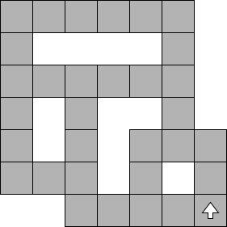
Мы разделили решение на несколько частей и занялись ими по отдельности:
- Стейт машина для управления роботом
- Определение дорожной разметки и способ не пересекать сплошную
- Машинное зрение для распознавания знаков “Стоп” и светофоров
- Ориентация и перемещение робота по городу с использованием алгоритмов, доступных в ROS
В начале решения задач по техническому зрению, мы изначально понимали какие есть алгоритмы и как они работают. Хорошей кодовой базой и документацией к ней являются мануалы для TurtleBot3 на robotis.com, плюс в их репозитории с соревнований autorace: turtlebot3_autorace, https://github.com/ROBOTIS-GIT/turtlebot3_autorace_2020. В этих репозиториях есть хорошие примеры:
- Автоматическая парковка по разметке (правда разметка там упрощенная: всего одна дорожная полоса, плюс левая линия окращена в желтый цвет);
- Распознание объектов;
- Реализация стейт-машины.
State Machine
Идея решения изначально была следующая: Делаем стэйт-машину с двумя состояниями: GOTO_0, GOTO_1. Они являются состояниями следования в точки 0 и 1 на карте соотвественно.
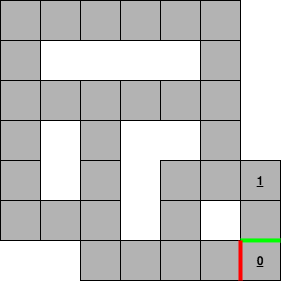
В момент, когда робот находится в точке 0, на глобальную карту планировщика наносится препятствие, отмеченное красной линией; в момент, когда робот покидает точку 0, на глобальной карте удаляется препятствие, отмеченное красной линией, и добавляется другое препятствие, отмеченное зелёной линией. Это нужно для того, чтобы глобальный планировщик не строил маршрутов, ведущих на точку старта по тому же пути, по которому из неё выехал робот.
По завершению (достижению точки) состояния циклично меняются. Так достигается то, что робот ездит кругами.
В состояниях GOTO_0, GOTO_1 стэйт-машины проверяется, не был ли замечен красный свет светофора или знак “Стоп”. Если таковые были замечены, делаем остановку до окончания красного света или на одну секунду в случае знака.
Также впоследствии были добавлены состояния INIT и IDLE. В INIT мы включаем платформу, инициализируем объекты вспомогательных классов и переходим в состояние IDLE. Также перейти в состояние IDLE можно из GOTO_0 и GOTO_1. В качестве фреймворка для state-machine было реализовано собстсвенное решение, построенное на базе стэйт-машины Karn Saheb. В реализацию класса StateMachine добавлено поле S типа пустого класса ObjectStorage. Это позволяет организовать удобную работу с одними данными из разных состояний через setattr(Class, Attr, Value) и через его сокращенный вариант Class.Attr = Value.
Детекция разметки
В начале думали использовать, что вроде lane-detection:
Также завели конфигурирование birdview с помощью dynamic_reconfigure.
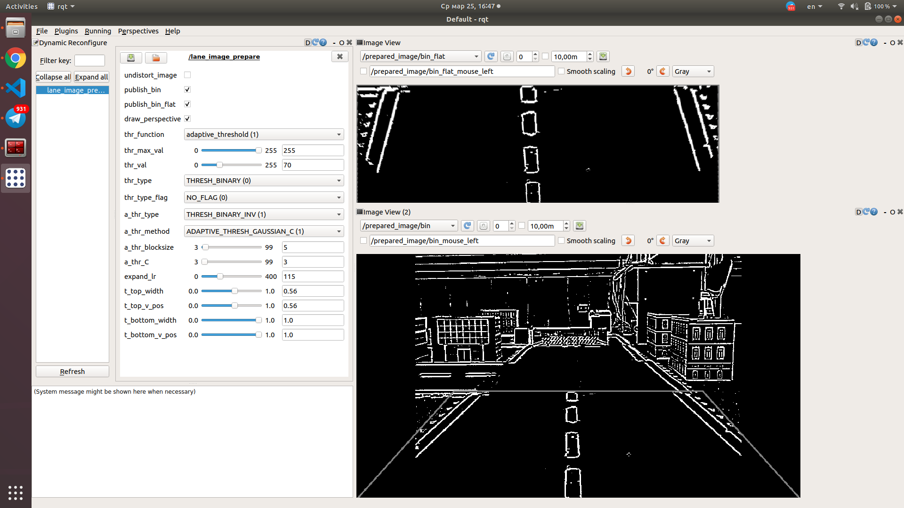
Затем посмотрели в сторону использования нейронных сетей для детектирования попутной полосы цветом color-segmentation. Нам понравилось решение dheera/ros-semantic-segmentation. По размеченной цветом картинке можно высчитать координаты области и передавать эти данные в локальный планировщик.
На тему семантической сегментации изображений есть статья на хабре.
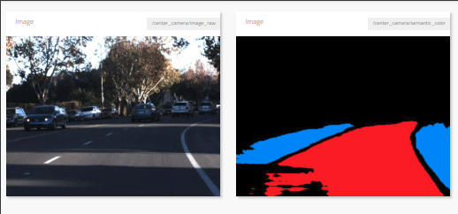
Однако после тестов в симуляторе, мы поняли, что это решение ведет себя ненадежно, и в рамках соревнования нам нужно что-то иное. Идея пришла довольно быстро. Мы решили нанести на глобальную карту сплошную разметку.
Составленная карта для робота представляет собой растровое изображение. После составления начальной карты алгоритмом gmapping мы дорисовали её руками. Убрали помехи в виде случайно зафиксированных людей и роботов, а также нанесли сплошную разметку.
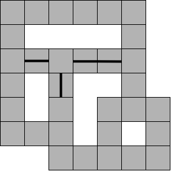
Затем нам нужно было как-то правильно выбирать полосу и не ехать по встречке. Мы решили динамически наносить на глобальную карту препятствия, таким образом, что если робот въезжает в радиус R1 центра некоторого перекрестка, то во всех запрещенных встречных направлениях перекрестка строятся препятствия, до тех пор пока робот не отдалится от центра данного перекрестка на радиус R2.
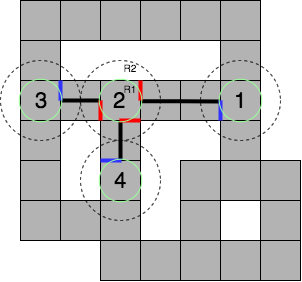
Распознание объектов
В рамках ограниченного времени хакатона, было решено заранее поискать готовые инструменты для выделения нужных объектов на изображении. Одним из инструментов оказался ROS пакет find_object_2d: он позволяет на лету сконфигурировать детектор фич и дескриптор для классификации объектов по заранее имеющимся картинкам, а также предоставляет список определённых объектов и их координат с матрицами гомографии в топик /objects и objectsStamped. Помимо выделения объектов нужно было, например, правильно распознать цвет светофора, поэтому помимо готовых решений пришлось применять решения из библиотеки opencv. Итоговым решением задачи по определению знака стоп и цвета светофора стала нода detect_objects_node.py. Кстати вот неплохой код из проекта по управлению машиной CarND-Capstone в котором мы черпнули много полезного.
Распознавание знака стоп
Распознавание знака стоп было реализовано с помощью пакета find_object_2d. В качестве детектора фич и дескриптора был выбран ORB с увеличенным количеством итераций афинных преобразований для более робастного определения знака под разными углами. Все параметры распознавания доступны здесь. Для довольно уверенного распознавания знака с разных ракурсов хватило вот этой картинки:

С помощью матрицы гомографии, данные которой уже в готовом виде присутствуют в топике /objects, можно восстановить перспективу и размеры объекта для добавления ограничений по размеру знака при его распознавании.
Для удобной интеграции распознавания знака с машиной состояний был реализован сервис detected_stop, который возвращает информацию о том, распознан знак или нет.
Для настройки некоторых параметров детектора был применён механизм динамической конфигурации параметров dynamic_reconfigure, который позволяет на лету (что особенно актуально в условиях ограниченного времени) подобрать нужные параметры через инструмент rqt. Например вот так мы настраивали распознание красного света светофора:
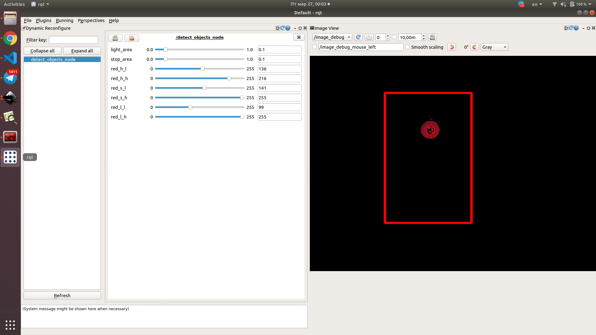
Распознавание светофора и его цвета
С распознаванием светофора ситуация оказалась менее очевидной. Изначально был план с помощью find_object_2d определить границы светофора и уже внутри этих границ определять цвет светофора. Но возникло несколько проблем. Во-первых изображение светофора с гораздо меньшим успехом определялось на тех же детекторах, что и знак стоп (с другими за короткое время успеха добиться тоже не удалось). Во-вторых надёжность определения границ светофора страдала при переключении его цвета. Поэтому по ходу тестирования определения объектов на хакатоне пришлось переключиться и придумать другой способ.
Рабочий алгоритм по выделению цвета светофора выглядел следующим образом: вначале на изображении выделяются области определённой насыщенности в цветовом пространстве HSV, затем среди этих областей производится поиск областей, наиболее похожих на круг (методом Hough Circles) с определёнными границами по размеру. Если такие области есть - мы определили, что находимся у светофора с определённым цветом.
Минусов такого алгоритма определения состояния светофора было много - как минимум любой объект красного цвета, похожий на круг, мог сбить нас с толку (что и произошло при первом запуске на соревновании). Но также был рассчёт на то, что затянув ограничения должным образом, мы избавимся от ложных случаев и увеличим количество правильных распознаваний состояния светофора, с учётом того, что в помещении не было других красных круглых объектов.
Особенным моментом стало то, что мы не могли использовать видимое изображение с камеры Astra в виду очень узкого угла обзора. А также не особо подходила камера Logitech HD Pro C920 также из-за достаточно узкого угла обзора установленная камера внутри робота не позволяет увидеть знак с другого края дороги – нужна более широкоугольная камера. Мы же более-менее решили эту проблему с выносом камеры за пределы робота.
Navigation Stack
Приведу схему ROS Navigation Stack (информация взята из презентации PhD Paul‑Edouard Sarlin) для общего понимания процессов.
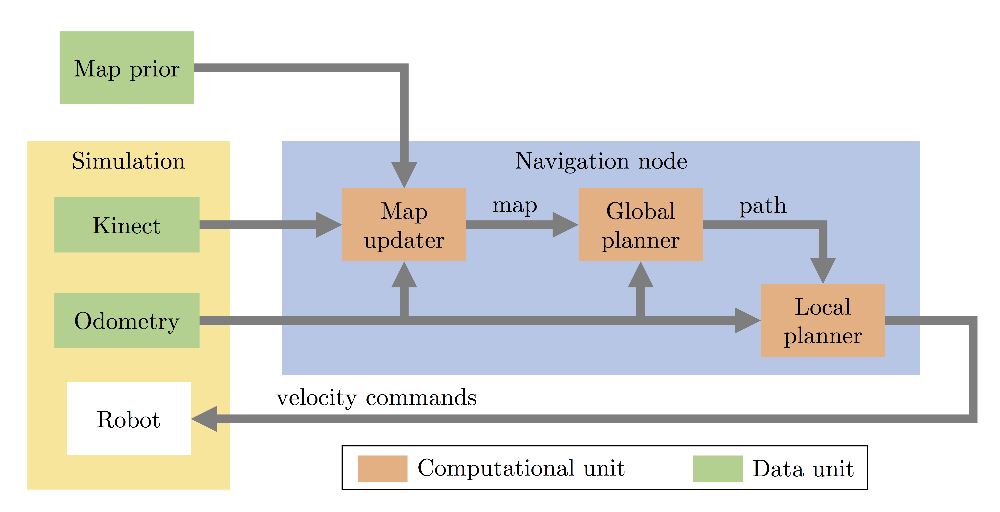
- Map prior: что заранее известно о окружающей среде
- Kinect: камера глубины, возвращающая облако точек
- Odometry: позиция робота в лабиринте
- Map updater: обрабатывает данные для создания и обновления внутренней карты окружающей среды
- Global planner: вычисляет маршрут от начальной точки в цель, используюя карту
- Local planner: выполняет и корректирует с учетом обстановки процесс перемещения робота по построенному маршруту
Для управления роботом используется супер-пакет navigation, он содержит в себе move_base (утилита для управления роботом через угловые скорости) и два планировщика: локальный и глобальный. Планировщик – это программа, которая, опираясь на положение робота на карте окружающего пространства, может построить маршрут в заданную координату. Локальный планировщик работает с небольшим участком карты в ограниченном пространстве вокруг робота с учётом данных с датчиков робота об окружающих объектах. Глобальный планировщик строит общий маршрут, ориентируясь по всей карте, без учета возможного появления новых препятствий.
Полезным к изучению будет мануал по настройке Navigation Stack на роботе. И туда же очень хорошая статья по настройке ROS Navigation Stack.
Также вышел новый пакет
robot_navigation, как замена старому.
Для решения задачи ориентирования по построенной карте мы использовали стандартный алгоритм amcl. В него мы передавали подготовленную карту без разметки, чтобы алгоритм не сходил с ума, когда не видел разметки с помощью лидара.
Вместо стандартного локального планировщика мы решили использовать teb_local_planner (github), который написали ребята из TU Dortmund University. Несколько ссылочек c примерами:
- https://github.com/rst-tu-dortmund/teb_local_planner_tutorials
- http://wiki.ros.org/navigation/Tutorials/Navigation%20Tuning%20Guide#The_Local_Planner
- http://wiki.ros.org/teb_local_planner/Tutorials
Для описанных выше вещей нужно было как-то добавлять препятствия, построенные на отдельных картах в планировщик или на глобальную карту, которую также кушает планировщик.
В планировщиках обычно используются простые по назначению слои:
obstacle_layer– динамические препятствия (пример настройки Obstacle inflation in costmap_2d)inflation_layer– утолщение препятствийstatic_layer– статичная карта
Каждый слой должен быть определнного типа:
costmap_2d::StaticLayer– препятствия, построенные на базе заданной статической картыcostmap_2d::ObstacleLayer– препятствия добавляемые с помощью топика типаLaserScanилиPointCloudcostmap_2d::InflationLayer– добавляет вcostmapлинию некоторого радиуса и определнной плотности вокруг препятствийcostmap_2d::VoxelLayer– добавление 3D объектов
Помимо использования обычного набора слоев, можно добавить свой. Однако у меня после добавления слоя типа costmap_2d::StaticLayer, содержащего сплошную разметку, получаемый costmap был с сильными дефектами.
Подробнее про costmap_2d вы можете прочитать в официальной документации здесь. Там вы можете найти примеры конфигураций (1, 2, 3), описание простых типов (staticmap, obstacles), описание flat и layered.
Также я нашел решение Sr4l/virtual_obstacles, которое представляло из себя Costmap Plugin для добавления слоев типа costmap_2d::MovingObjects. У проекта была не очень хорошая документация, поэтому я написал Lars Kistner и он дополнил репу и прислал еще дополнительные инструкции и интересное видео, где он это использует.
Однако я не успел завести это решение и решил использовать что-то более топорное. В дальнейшем наверное правильнее будет использовать его решение.
Для построения препятствий на карте я написал реализацию рисования линий с помощью простейшего алгоритма Брезенхэма.
Для динамического слияния (наложения) карт я написал Maps Merger.
Итого у нас получилось пять карт:
/maps/map_amcl– чистая карта, полученная с помощью алгоритмаgmapping(подробнее о построении карты здесь)/maps/map_mb–/maps/map_amcl+ нарисованные сплошные линии (передавалась в глобальный планировщик)/maps/crossroads– карта с динамически наносимыми на неё перекрестками/maps/start_wall– карта с динамически наносимыми на неё стенками у точки старта/maps/map_merged- карта динамически строящаяся из/maps/map_mb,/maps/crossroads,/maps/start_wall(передавалась в локальный планировщик)
Статические карты поднимаются с помощью стандартной утилиты
map_serverвходящей в стекnavigation.
После настроек стека навигации можно выполнить следующую команды для теста робота:
rostopic pub /move_base_simple/goal geometry_msgs/PoseStamped '{header: {stamp: now, frame_id: "map"}, pose: {position: {x: 0.674, y: 0.119, z: 0.0}, orientation: {w: 1.0}}}'
# PS Координаты и фреймы должны быть ваши (выбраны исходя из используемых карт)
Подробнее о том как сделать проверку написано здесь. Также чтобы робот не дергался при старте и остановке (при заданных высоких скоростях) можно настроить velocity_smoother, подорбнее об этом здесь.
Другие интересные источники по теме
- Статья по использованию
costmap_2dдля квадракоптера на Pixhawk - Статья Layered Costmaps for Context-Sensitive Navigation David V. Lu, Dave Hershberger, and William D. Smart
- Работа Fast Gaussian Process Occupancy Maps. In 2018 15th International Conference on Control, Automation, Robotics and Vision (ICARCV) (pp. 1502–1507). IEEE. Yuan, Y., Kuang, H. & Schwertfeger, S. (Файл gpmaps.py)
- Супер-пакет ROS
geometry2для проведения преобразований. Примеры здесь 1 и здесь 2. - Утилита
occupancy_grid_utils - Также ребята из того же TU Dortmund University написали
costmap_converterутилиту позволяющую вынимать примитивы изcostmap. Исходный код выложен на github, софт написан с использованием алгоритма DBSCAN. - Аналог для
costmap_2d, Это библиотека C++, прямо аналогичная библиотеке GridMap ETHZ ASL, но разработанная для использования с затратами, когда элемент данных представляет собой беззнаковый символ (в отличие от двойников grid_map).
Определение препятствий
Некоторые команды просто убирали несколько уровней платформы TurtleBot и использовали только лидар. Мы же решили разделить эти задачи и завести их на разные сенсоры.
Для детекции других участников движения и блоков дорожных работ мы решили исопльзовать RGBD-камеру с программной проекцией облака точек в плоскость на заданной высоте (и в дальнейшем использованием этого решения в качестве лидара). Эту информацию мы передавали в локальный планировщик, который выполнял дорисовку карты и перепостроение маршрута для объезда препятствий.
Для реализации алгоритма SLAM мы использовали лидар, расположенный наверху робота, он не цеплял динамических препятствий, и тем самым снижалась вероятность возникновения ошибки.
Также для детекции более низких препятствий, нам пришлось сместить RGBD-камеру ниже.
Итог
В этот раз занять призовое место не удалось. Проблема заключалась в том, что мы слишком сосредоточились на прикладных вещах и рассчитывали, что отлаженный в симуляторе teb_local_planner будет работать также хорошо. По сути это основной механизм в софте, отвечающий за перемещение. Каково было наше удивление, когда за два часа до защиты мы поняли, что робот даже нормально развернуться не может. В итоге мы потратили последние 2 часа в попытке отладить планировщик, и робот поехал. Однако на первом же повороте робот застрял, увидев препятствие, между которым до сплошной полосы оставалось небольшое пространство. Он не смог перестроить глобальный маршрут из-за ограничений планнера и застрял, замкнувшись в бесконечном цикле попыток въехать и выехать за пределы мётрвой зоны, куда он сам себя загнал.
Как результат выиграли более простые примитивные решения, которые либо обходили все по правилу прохождения лабиринта, либо двигались по заранее сохраненному маршруту и не считывали ни светофоров, ни знаков.
У нас же была очень круто проведененная неделя в Питере в компании специалистов и друзей. Мы очень благодарны компании Starline, в частности: Алексею Хованскому, Николаю Дема, Александру Никифорову, Кириллу Гореву, Веденину Даниилу и Маркеловой Виктории.
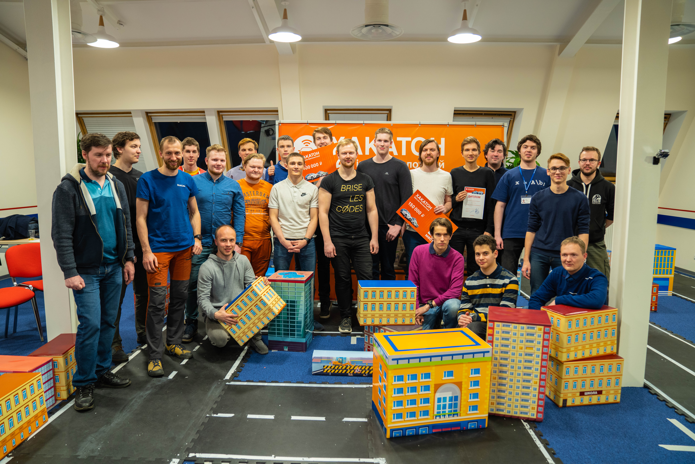
Бонусом укажу пару-тройку ссылочек на ресурсы ребят и компанию ораганизавторов:
- developer.starline.ru – открытое API некоторых продуктов Starline.
- Портал РобоФинист, кстати его основным разработчик является всего один человек – Кирилл Горев. А еще на этом портале вы можете найти больше фоточек с этого замечательного мероприятия.
- YouTube канал Николая Дема. Коля крутой робототехник и на его ютубчике периодически появляются интересные видосы.
На этом всё, спасибо большое за прочтение!